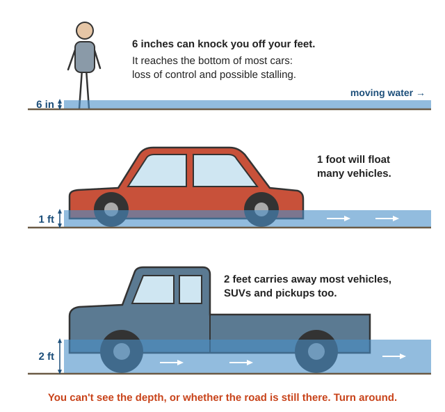
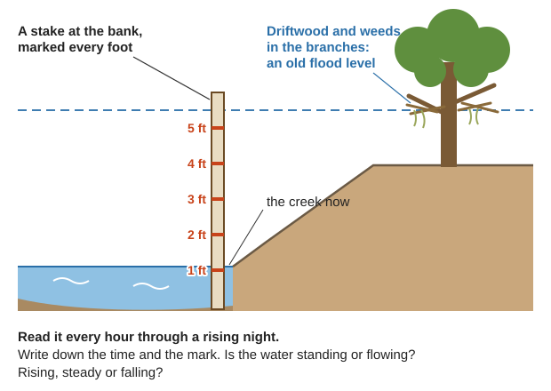
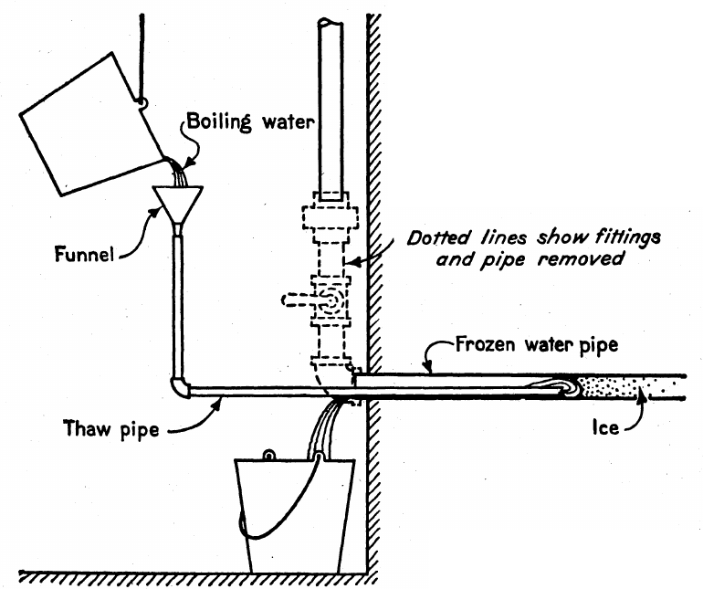
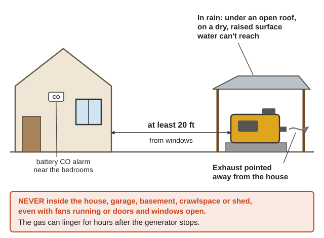
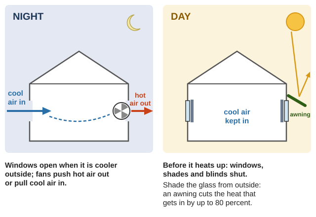

Guides › Disasters · Emergency · Index A–Z
How a household in the Illinois Valley can ride out the weather disasters that come with no power, no forecast and no rescue: floods and debris flows and the clean-up after; winter storms, ice, carbon monoxide, frozen pipes and falling trees; heat waves with no air conditioning; and windstorms. In the Illinois Valley the county rates floods (County plan, p. 46), extreme heat (p. 58), windstorms (p. 61) and winter storms (p. 64) each "high" probability: one may strike within 10 to 35 years. A moderate to severe winter storm comes about once a year. Most books: FEMA's Are You Ready? (2004 and 2020) in Southern-Oregon\Earthquake-Tsunami; the weather spotter's guide in Southern-Oregon\Navigation-Weather\Weather; EPA's flooded-well sheet in Southern-Oregon\Water-Wells-Pumps\Water-Quality; the septic bulletin in Southern-Oregon\Sanitation-Hygiene\Septic-Greywater; FEMA P-1019 (storms and power lines) in Southern-Oregon\Fuel\Fuel-Quality-Storage; the CPSC carbon monoxide leaflets in Southern-Oregon\Homestead-Skills\Cooking-Heating and Southern-Oregon\Off-Grid-Power; and a report on the 2021 heat-wave deaths in Southern-Oregon\Disaster-Scenarios\Fire-Heat-Drought.
The short version
- Never drive or walk into moving water. "Six inches of fast-moving water can knock you off your feet," and "Two feet of moving water will carry away most vehicles." More than half of flood drownings happen in a vehicle driven into the water (Spotter Guide, p. 12).
- If a flash flood is possible, walk to high ground now. "Do not wait for instructions to move"; flash floods come "with or without" rain clouds or heavy rain (FEMA, p. 53).
- Generators, grills, camp stoves and charcoal stay outdoors, at least 20 ft from windows (FEMA 2020, p. 15). Carbon monoxide "CAN KILL YOU IN MINUTES," even with doors and windows open (CPSC, p. 1).
- After a flood: throw out all food that touched the water (FEMA 2020, p. 31), don't run or drink from a flooded well until it is disinfected and tested, and don't use the septic system until the water is gone (EPA, pp. 1–3).
- In a winter outage, heat one room. If the house will go cold for days, shut the water off and drain the pipes (Household Discoveries, p. 103). Keep 50 ft from a downed line (Map Your Neighborhood, p. 23).
- In a heat wave, check on everyone who lives alone, twice a day (rule of thumb). In the 2021 heat dome at least 48 of the 68 dead who had a home lived alone, and half of all the dead had only a fan (heat report, pp. 10, 12).
- Cool the house by night, shut it by day: windows open in the cool of the night, then windows and shades closed before it gets hot (EPA smoke guide, p. 49).
- Drink before you are thirsty. "Very hot temperatures can double the amount of water needed" (FEMA, p. 34).
| Moving water | What it does |
|---|---|
| 6 inches | Knocks you off your feet (Spotter Guide, p. 12); reaches the bottom of most cars, "causing loss of control and possible stalling" (FEMA, p. 54) |
| 1 foot | "will float many vehicles" (FEMA, p. 54) |
| 2 feet | Carries away "most vehicles including sport utility vehicles (SUV's) and pick-ups" (same page) |

How little moving water it takes, drawn to scale (Spotter Guide, p. 12; FEMA, p. 54; a diagram drawn for this guide).Floods here (County plan, pp. 43–46): they come October to April, from the Illinois, Rogue and Applegate rivers and their creeks; Slate Creek and Butcher Knife Creek have flooded too. Homes stand in mapped floodplains at Cave Junction (the Illinois), Kerby, O'Brien and Wilderville (p. 44). The benchmark is the Christmas flood of 1964: 10 inches of rain in six days, the Rogue at 35 ft at Grants Pass (flood stage is 24.5), the Rogue and Illinois valleys cut off (p. 45). Cave Junction got 8.12 inches in one day, on 22 December 1964 (NRCS soil survey, p. 5). In January 1997, 4 inches in 48 hours brought the Rogue to 90,100 cubic feet a second at Grants Pass and a state of emergency; in February 2015 a foot of water covered US-199 near Selma, Butcher Knife Creek flooded, and roads closed near Selma and O'Brien (p. 46). The storms of 1996–97 set off 9,582 recorded landslides across the state (p. 52), and about 70% of the county's land is highly or very highly prone to slides (p. 50).
| Kind | How it comes | Where |
|---|---|---|
| Flash flood | "Water rises rapidly with little or no advance warning," from heavy rain, ice jams or a dam break (Spotter Guide, p. 43) | Steep creeks, canyons, dry streambeds, low crossings |
| River flood | Rain or snowmelt more than the channel holds "spreads out over the adjacent land" (P-1019, p. 39); long floods can be "slow to recede" (p. 40) | Bottoms and flats along rivers |
| Debris flow (mudflow) | "rivers of rock, earth, and other debris saturated with water," at "avalanche speeds," running "several miles from their source" (FEMA, p. 107) | Below steep slopes; in channels and at canyon mouths |
| Landslide | Small or large, slow or fast (same page) | Steep slopes, road cuts, old slides |
Watch the rain upstream, not just here. "A storm that produces heavy rain higher on the mountain could produce a flash flood lower on the mountain," and snowmelt adds to it (TC 3-97.61, p. 27). Floods can run "many miles downstream" of the rain (FM 3-97.6, p. 15). A warm, heavy rain on snow (an atmospheric river) is the classic winter flood (general practice). On a burned slope, about half an inch an hour of rain can start a debris flow (USGS, p. 1): keep a rain gauge (Navigation & Weather guide).
Watch your creek like a weather spotter: is the water standing or flowing? Rising, steady or falling? Is it in a place known to flood (Spotter Guide, p. 5)? Drive a stake at the bank, mark it every foot, and read it every hour through a rising night (rule of thumb).
Learn where water has been. "Observe the previous flood marks" (Kephart, Vol. 1, p. 213): "driftwood and weeds washed into the branches of waterside trees" show the old flood level (Shifts and Expedients, p. 74). "It is quite common ... for wide bottoms to be flooded in a night" (Kephart, Vol. 1, p. 217).

A marked stake read every hour, and the old flood level that driftwood in the branches shows (Spotter Guide, p. 5; Shifts and Expedients, p. 74; a diagram drawn for this guide).Signs a slide or debris flow is coming (FEMA, p. 108; FEMA 2020, p. 13; USGS, p. 1):
Get out of its path at once. "Watch for flooding after a landslide," because the same storm starts both (FEMA 2020, p. 13).
📚 Go deeper: EPA What to Do After the Flood — the well, step by step; Texas A&M — septic systems in outages and floods; FEMA Are You Ready?, pp. 182–184 — returning home.
Winter storms here come October to March, and destructive ones once or twice a decade (County plan, pp. 62, 64). In February 2019 fallen trees closed US-199 at the California line and 2,500 customers lost power around Grants Pass, Cave Junction and O'Brien; in January 2021 heavy snow left 45,000 customers without power (p. 64). The valley is "one way in, one way out": a storm on US-199 can strand Cave Junction, and "all of Cave Junction and the Illinois Valley could be cut off from power for an extended period" (p. 140). Trees here blow over most in the wet season, on shallow roots in saturated ground (p. 62).
Freezing rain is rain "that freezes when it hits the ground, creating a coating of ice on roads, walkways, trees, and power lines" (FEMA, p. 81). Ice and wind snap lines and poles, and trees and limbs breaking under ice bring down more. When damage is widespread, repairs are slow (P-1019, p. 30), and across several states "weeks may pass before power is completely restored" (p. 29).
Here the record low is −6 °F at Cave Junction (December 1972), and every few years a cold air mass from the east brings several days well below freezing (NRCS soil survey, p. 5); the county warns of breaks "in un-insulated water lines" (County plan, p. 65).

Thawing a buried pipe: push the thaw pipe forward as the ice melts, with the bucket catching the water that runs back (USDA FB 1460, p. 14).📚 Go deeper: FEMA Are You Ready?, pp. 81–84 — winter storms and extreme cold; P-1019, pp. 29–30 — how ice brings lines down.
Carbon monoxide "is a colorless and odorless gas," made by anything that burns fuel, and kills "more than 100 people" a year in the United States from household products alone (CPSC, p. 1). Outages, with generators and makeshift heaters, are when it strikes (rule of thumb).

Outdoors, at least 20 feet from windows, exhaust away from the house; in rain, under an open roof on a dry surface (FEMA 2020, p. 15; CPSC, p. 1; a diagram drawn for this guide).Heat here (County plan, pp. 57–58): days with a heat index of 90 °F or more are expected to go from about 13 a year to about 40 by the 2050s. The county saw up to 111 °F in August 2020 and 92–108 °F in the June 2021 heat dome, with two more heat waves later that summer. Grants Pass hit 108 °F as long ago as 1955, and every few years a "sweltering" week or longer comes (NRCS soil survey, p. 5).
"Heat kills by pushing the human body beyond its limits" (FEMA, p. 87). In the 2021 heat dome Portland's county had 72 heat deaths, where a typical year has none (heat report, p. 2). The most died the day after the hottest day (p. 7), and 94% died in their own homes (p. 10).

Open at night, shut before the day heats up, and shade the glass from outside (EPA smoke guide, p. 49; FEMA, p. 88; a diagram drawn for this guide).| At risk | Why (heat report; FEMA, p. 87) |
|---|---|
| Older people | 78% of the dead were 60 or older (p. 8) |
| People living alone | "Living alone is a known risk factor for heat death" (p. 10) |
| Young children, the sick and the overweight | "more likely to succumb to extreme heat" (FEMA, p. 87) |
| Upstairs, with no cooling | Half of the dead had only a fan; 18% had nothing (p. 12) |
| Outdoor workers and people in vehicles | Emergency visits came from work and from vehicles (p. 25) |
📚 Go deeper: Heat report — who died in the 2021 heat dome, and why; FEMA Are You Ready?, pp. 87–90 — extreme heat and its first aid; FM 90-3, pp. 23–29 — water and work in heat.
Windstorms here come mostly October to March, and the county expects 60 mph winds about once in 25 years (County plan, p. 61); most winters bring one or two damaging storms (NRCS soil survey, p. 5). Cave Junction had 64 mph gusts in December 1995, when wet soil left trees easy to topple; in April 2016 trees came down from Cave Junction to Selma; in April 2017 more than 60,000 people lost power, mostly in Josephine County (County plan, p. 60). Poorly anchored manufactured homes and older buildings that need roof repair are the most at risk (p. 61).
Before the wet season
Before winter
Before summer
All year
📚 Go deeper: County plan, pp. 43–65 — floods, landslides, heat, wind and winter storms in the county, year by year; NRCS soil survey, p. 5 — the valley's climate and its records.
| Book says | Do this instead |
|---|---|
| Thaw a pipe with a newspaper "torch, light it, and pass it along the pipe" (Lee's, p. 138); "a torch or burning newspaper" (USDA FB 1460, p. 14); "gasoline or kerosene gas in lamps" (Household Discoveries, p. 104) | No flame: it starts fires inside walls and melts plastic pipe (rule of thumb). Open the faucet and work back toward the supply with hot cloths or hot water (FB 1460, p. 14) |
| Fit "circular tubes of asbestos" over pipes, or line the wall "with asbestos" (Household Discoveries, p. 103) | Never asbestos. Wrap pipes in rags, foam or straw (rule of thumb), or "turn the water off" on cold nights, as the same page says |
| Fill the traps of a vacant house with "kerosene" (FB 1460, p. 15) | Use the strong salt brine or glycerin from the same list; no fuel in the drains (rule of thumb) |
| Frostbite: "rub the frozen surface gently with snow, or ice-water" (Kephart, Vol. 2, p. 466) | Warm it against skin; never rub it, never with snow, never at a fire (FM 4-25.11, p. 120) |
| Heat cramps: "large amounts of cold salt water," made with "two salt tablets" (FM 5-34, p. 31) | "DO NOT TAKE SALT TABLETS" (FM 21-10, p. 13); sip an electrolyte drink (Field Care guide) |